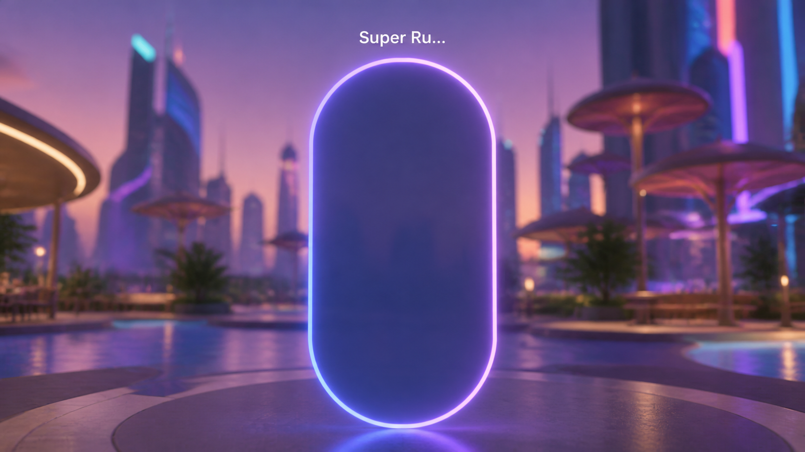
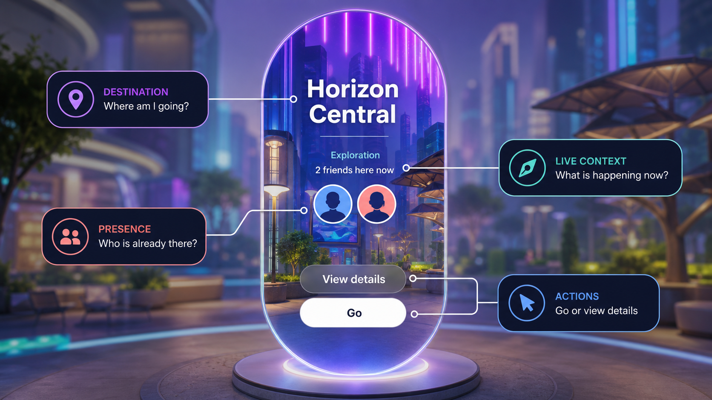

Essential metadata
Present in every context
- What is this destination called?
- What could I do there?
Spatial interaction · 2024
Designing navigation when the interface is the space.
Stepping through a portal was a blind gamble: a clipped name, no genre, no way to tell who was already inside. I redesigned the portal so it revealed more as someone approached: identity at a distance, actions when someone showed interest, and the full decision context only up close.
What changed
The portal lifted engagement across Horizon, improved day-one retention, earned alignment up through the VP level, shipped, and was introduced by Mark Zuckerberg at Meta Connect 2024.
 Meta
Meta
Content design owned the argument: the distance model and the metadata strategy, defended piece by piece against real pushback. Our team's product designer and art director worked out the physical design: where each element sat, and the portal's proportions relative to human height and door frames.
In Horizon, a portal is a floating oval that works like a doorway between worlds. Portal entries were the tracked success metric, and they rewarded exactly the pattern causing the problem: an uninformed arrival counted as a win even when the person looked around and left immediately.

A body standing in a room has no menu to defer to, so the only variable deciding what someone sees is how close they've chosen to walk:
UXR testing decided what filled each distance. I standardized those answers into one model:

Not everyone agreed. The two objections I heard most: surfacing all of this would decrease portal entries, and portals should stay mysterious. The mystery camp had the early momentum. A design leader's review comments about how people actually decide where to travel became my argument inside the travel team, and the entry objection dissolved under the state-of-intent frame: a confident pass that saves someone's time is a win, not a loss on the entry count.
The piece I fought hardest to keep was "View Details," the second action for the person one beat from committing who wanted a last look first. Against the objection that it added friction, my argument: it's the only thing standing between a guess and an actual yes.
Mark Zuckerberg introduced the portal at the Meta Connect 2024 keynote as "a new kind of primitive" he expected to become "kind of like the equivalent of a hyperlink in the Metaverse." By then it was already established internally as Horizon's canonical entry point for embodied travel.
The experiment that followed tested the portal against a control with no portal at all:
The test surface included the Go button. It measured the portal surface with its essential-choice CTA, not the metadata model in isolation.
Afterward, I shared the portal strategy with the onboarding team for its prototypes teaching people how to use portals. The product designer and I advised on proposed additions including an AI label, and published internal and go-to-market terminology guidance.
Every content design question I had worked on before started from what got tapped. This one started from where a body was standing, and that swap rewrote the hierarchy: how much appeared on screen at once, and exactly when each piece was allowed to show.